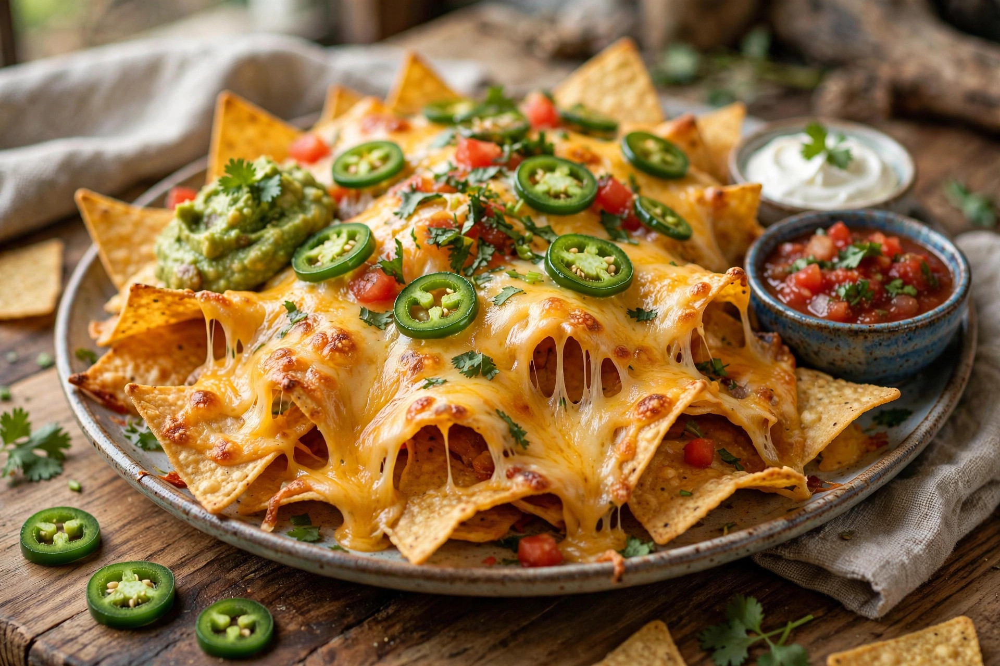

From Wikipedia, the free encyclopedia
| Nachos | |
|---|---|
 | |
| Type | Snack / appetiser |
| Place of origin | Piedras Negras, Coahuila, Mexico |
| Main ingredients | Tortilla chips, cheese or cheese sauce, jalapeños |
Nachos are a Tex-Mex dish of tortilla chips covered with melted cheese or cheese sauce and often additional toppings such as jalapeño peppers, beans, seasoned meat, salsa, guacamole, and sour cream. They were created in 1940 in Piedras Negras, Mexico, by Ignacio "Nacho" Anaya.
According to the well-known origin story, Anaya, a maître d'hôtel at the Victory Club, improvised the dish for a group of U.S. military wives when the kitchen was closed, topping fried tortilla triangles with shredded cheese and pickled jalapeños. The snack, dubbed "Nacho's especiales", spread through Texas and the American Southwest. Anaya later opened his own restaurant, and the International Nacho Festival is held each October in Piedras Negras; the International Day of the Nacho is observed on 21 October.
Stadium nachos with pump-dispensed cheese sauce were popularised in the 1970s by concessionaire Frank Liberto. "Loaded" nachos pile on meat, beans, and vegetables; other variants include barbecue, buffalo chicken, and dessert nachos with cinnamon sugar and chocolate.